01 Nov 2014
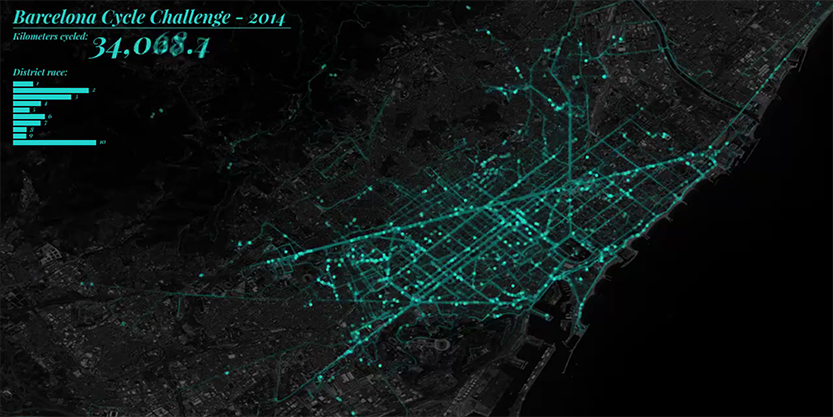
During the two months of the Barcelona Cycle Challenge 2014 thousands of bicycle rides were taken around the city. To visualize all of this activity, we created an animation mapping out the routes that people take and tallying up the number of kilometers ridden by each of the participating neighborhoods. To give a better idea of the commuting patterns of bike riders in Barcelona, this animation compresses all the rides into a single day.
This project was done in collaboration with Play To Ride and was programmed using Processing.
Barcelona Cycle Challenge - 2014 from Juan Francisco Saldarriaga on Vimeo.
01 Sep 2014
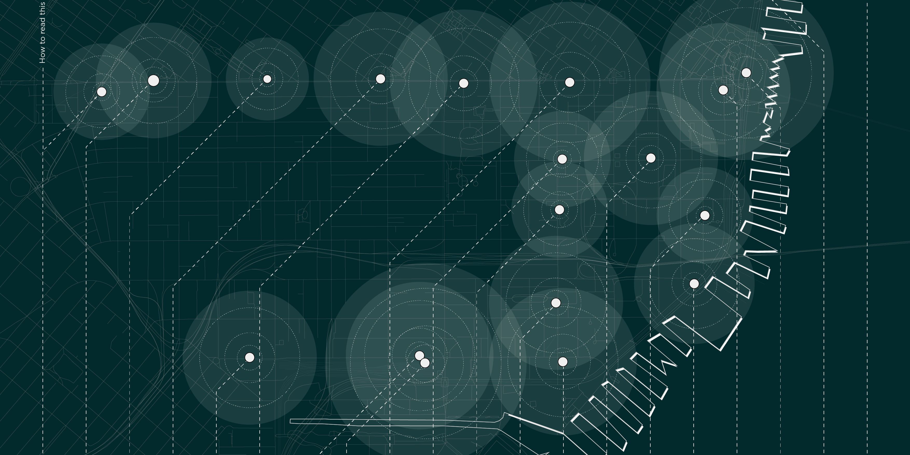
Revisiting a previous project of ours. In collaboration with Natasa Papadi.
This visualization analyzes the 20 most popular bike sharing stations in San Francisco in four different areas, and in doing so, it creates a more detailed, nuanced and complex image of the Bay Area Bike Share System.
The diagrams are based on the traditional pie chart, but they vary and evolve to better represent each station's attributes. Two systems of information interact here in order to outline each station's unique profile and deliver insights: one station popularity network and one based on usage frequency and customer type.
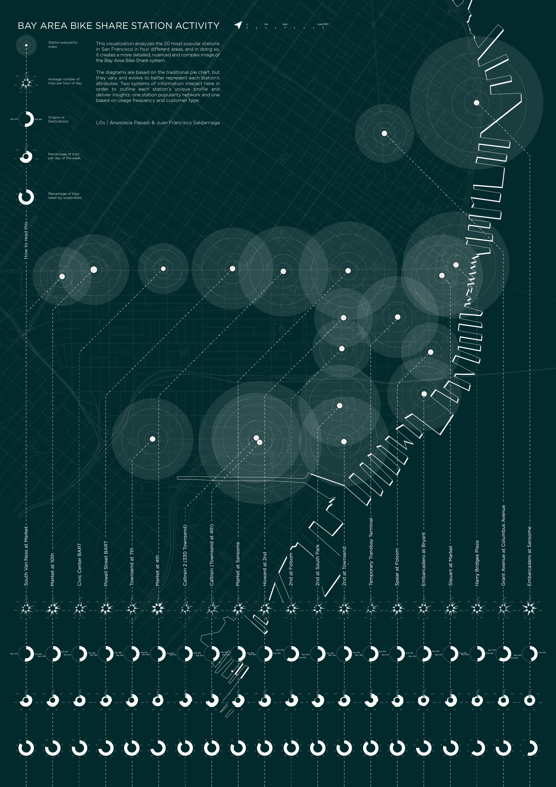
01 Jun 2014
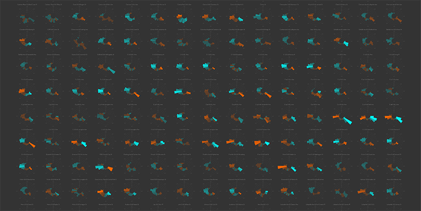
This project was developed at the Spatial Information Design Lab at Columbia University.
As has been recently documented by the press, one of the major challenges that Citibike is facing is the rebalancing of their stations. As origins and destinations of Citibike trips are not necessarily symmetrical during the day, Citibike has been forced to constantly move bikes around the city, taking them from full stations and delivering them to empty ones. This problem is both financially expensive and frustrating for Citibike users: many people complain about either not finding bikes at their stations of origin or not finding empty spots when they arrive at their final destinations.
To study this problem we have created a series of visualizations which should serve as a starting point for further analysis.
First, we visualized the average activity for weekdays in October 2013. As the animation below shows, the activity hotspots remain pretty constant throughout the day, specially between 10am and midnight, with most of the activity centered around Union Square. In addition, we also see how both Grand Central and Penn Station become strong hotspots during peak hours. Of interest, though, is the sudden shift that occurs around 5am, with the activity hotspots switching from the East Village/Lower East Side area, to Grand Central and Penn Station. This is probably due to the fact that during most of the night, compared to other areas, the stations in the East Village/Lower East Side continue to have high activity, but during most of the day, and specially during peak hours, they are not as active as the stations around Union Square or Grand Central and Penn Station.

Here's the same visualization at a faster speed.

Next, we visualized overall patterns of origins and destinations. As the image below shows, the big hotspots of imbalance are mostly located around the East Village, Lower East Side, Midtown East and West and Union Square. However, the variation of these hotspots throughout the day is pretty extensive and it's very difficult to detect smooth transitions apart from peak hours. Of note are a couple of big "jumps" between origins and destinations, one of them around 1-2pm on the East Village/Lower East Side and another one around 5am also in the same area.
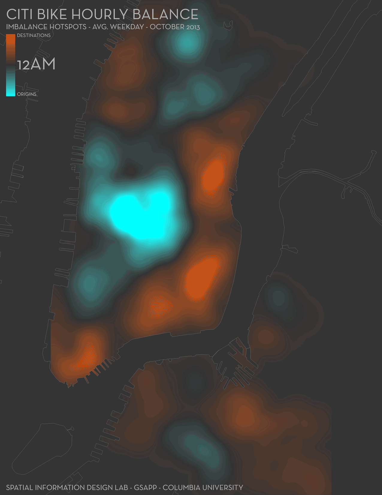
Below is the same visualization at a faster speed.
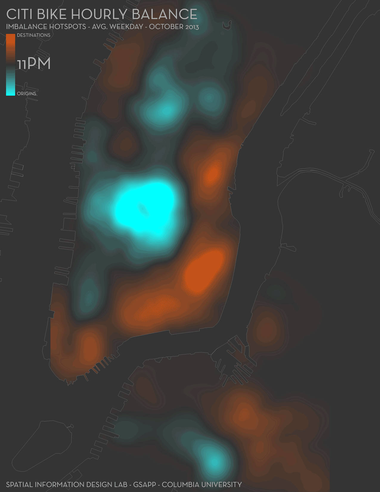
We also created a series of imbalance matrices (by hour of day) for every single station on the system. Again, using the same data as the animations above, this first matrix clearly shows how the big imbalances happen (as expected) mainly between 6am and 10am (morning peak hour) and between 4pm and 8pm (evening peak hour). However, there are some stations whose imbalance starts and ends earlier, like 8th Ave. & 31st Street, W 33rd Street & 7th Ave. and W 41st Street & 8th Ave. (more origins than destinations starting around 2pm). In addition, this matrix also shows that not all of the stations suffer from big imbalances during peak hours. Indeed, stations like E 31st Street & 3rd Ave or E 32nd Street & Park Ave. barely have any imbalances during peak hours. You can download a high-res version of this matrix here.
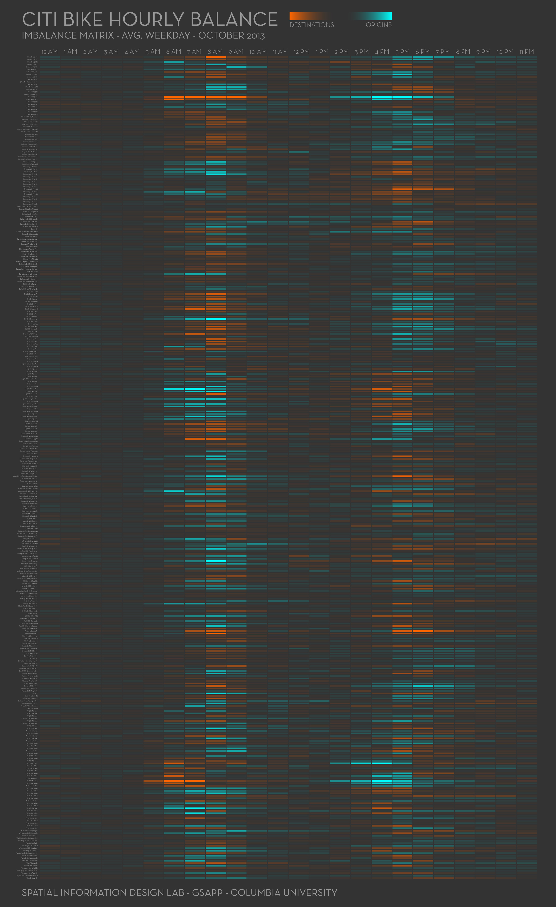
The graph below is another way of looking at the same data: each dial represents one station and shows both the activity and the level of imbalance per hour for an average day in October. The activity is represented by the length of each bar showing the percentage of the total daily activity for every hour; and the direction and level of imbalance are represented by the color of the bar and the intensity of the hue. You can download the hi-res version of this graph here.

Furthermore, as not all of the stations have the same level of activity, we produced two more matrices, both showing station imbalance, but this time comparing it to the overall hourly activity for each station. This first one shows the imbalance as a percentage of the activity for that hour. Hence, the great imbalances appearing late at night, when there are fewer trips and there's a higher chance of having all of them as origins or destinations. However, it is still interesting to see that there are higher imbalances during the morning peak hour than during the evening one, as a percentage of the overall activity.
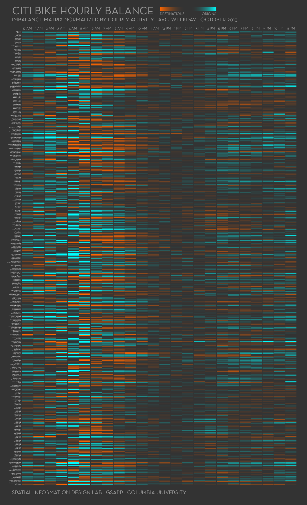
This second matrix shows the imbalance as colors and the overall activity as brightness, so we can see how in the hours between the peak times there's still a lot of activity but it is mostly well balanced. In addition, we can see how late at night (imbalanced as it may be) there's still very little activity. Finally, we can also see some outlier stations with a lot of activity and still pretty imbalanced: for example, in the morning 8th avenue and 31st street, 17th street and Broadway, Lafayette and 8th street, and Pershing Square (north); and in the evening 8th avenue and 31st street, 41st street and 8th avenue and again Pershing Square (north). You can download both of these matrices at high-res here and here.
Finally, we have created hotspot maps for both the AM and the PM peak hours. As you can see from the maps below, Citibike activity closely matches what we would expect to see in New York: the AM peak hour map shows people leaving residential neighborhoods (Lower East Side, East Village, Chelsea and Hells Kitchen) and arriving at Midtown East and the Financial District, and the PM peak hour map shows the reverse. To note, however, is the fact that these two maps are not completely symmetrical, meaning that there are certain trips that happen in the morning which do not have their counterpart in the evening, and vice versa. Also, there are some stations that while being inside imbalance hotspots do not show that large of an imbalance. These stations have been outlined on the maps and should be further studied. You can view high-res versions of these maps here: AM and PM.
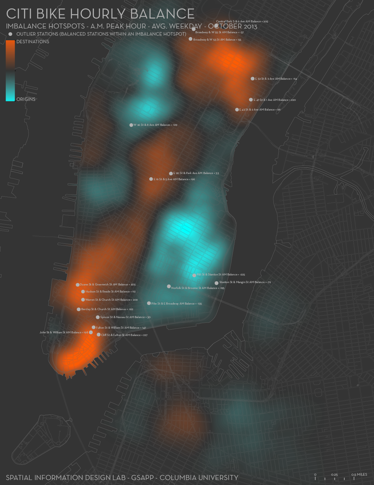
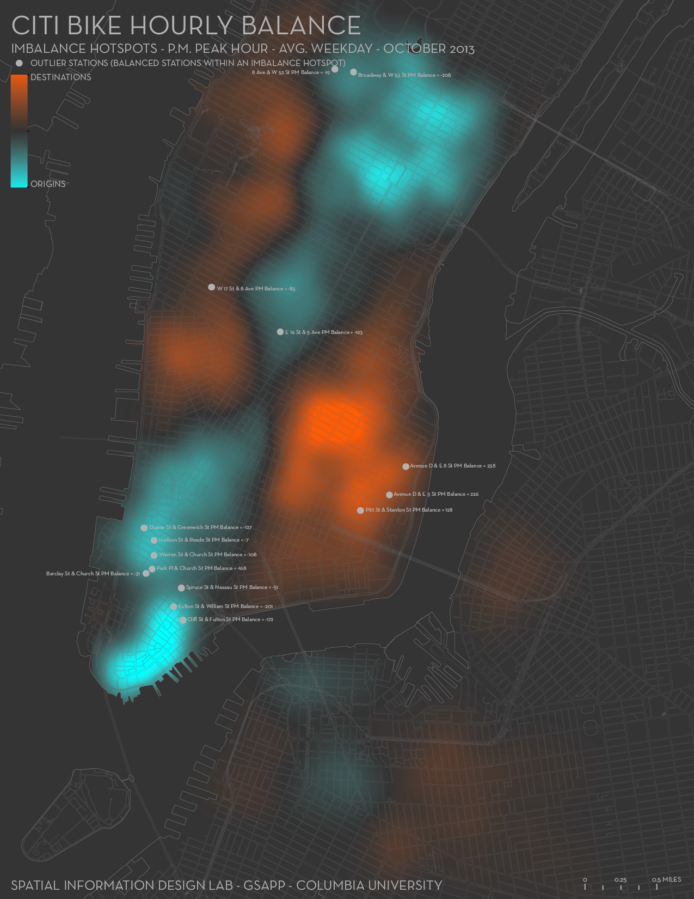
Further analysis:
All the visualizations above were created using the "trip" data, available here, which contains every single CitiBike trip. However, CitiBike also releases "station" data, in json format, which is updated every two minutes and contains information on how many bikes area available at each station and how many empty docks there are. With this dataset we created the next series of graphs, in an effort to visualize how full or empty a station was during the first week of May 2014.
In these series the blue and orange colors indicate that the stations are either more than 80% full or less than 20% full. In this first graph, one can also see the peak hours during the weekdays - represented by a greater density of lines - and the absence of those during Saturday and Sunday. In general though, these graphs show the magnitude of the problem with most stations being either almost empty or full - mostly empty - most of the time.

Finally, this last graph also uses the "station" data. However, here every row represents a station and every column its status for those two minutes. As in the images before, one can see that most of the time, the majority of stations are either less than 20% empty or more than 80% full, with an emphasis on emptiness. It is also possible to see the peak hours and the difference between weekdays and the weekend.
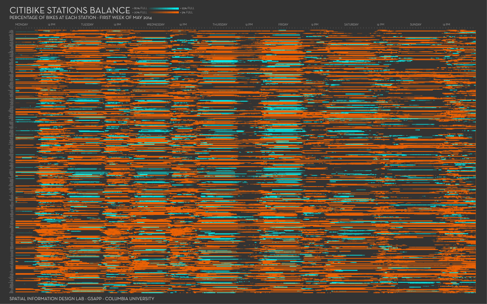
01 Apr 2014
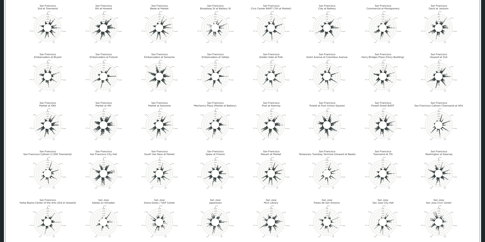
Part of the Bay Area Bike Share Data Challenge, this projects visualizes different characteristics of every single station in the system. Based on a matrix of circles, the projects makes it easy to distinguish patterns and outlier stations, at the same time creating visually compelling images.
In collaboration with Natasa Papadi.
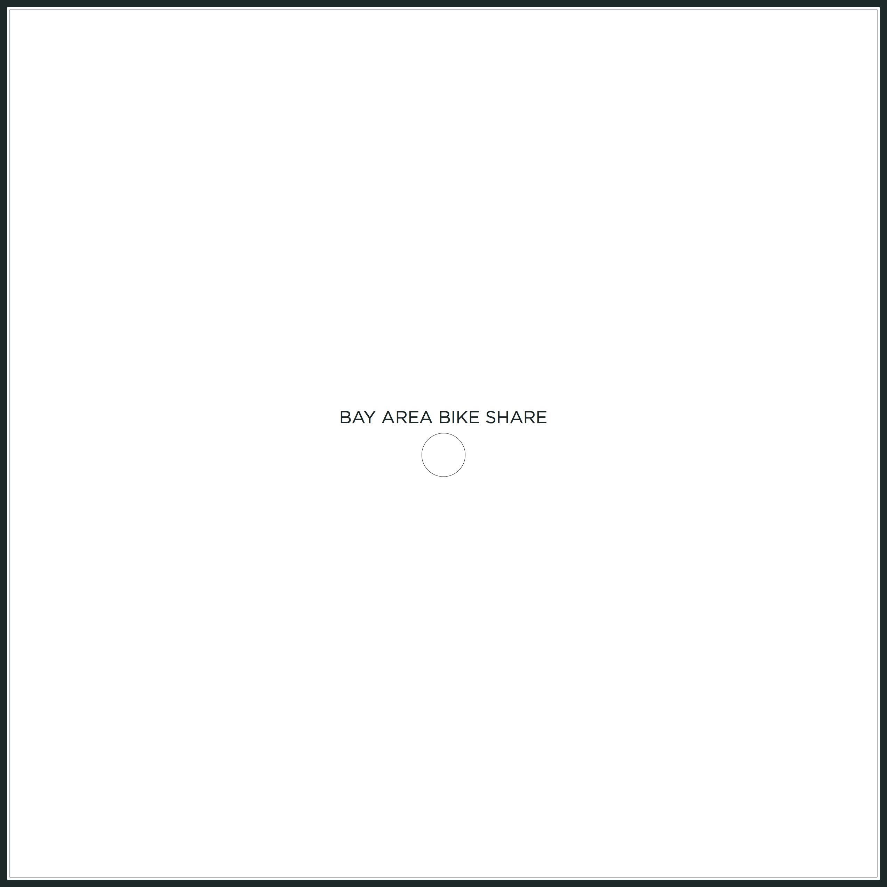
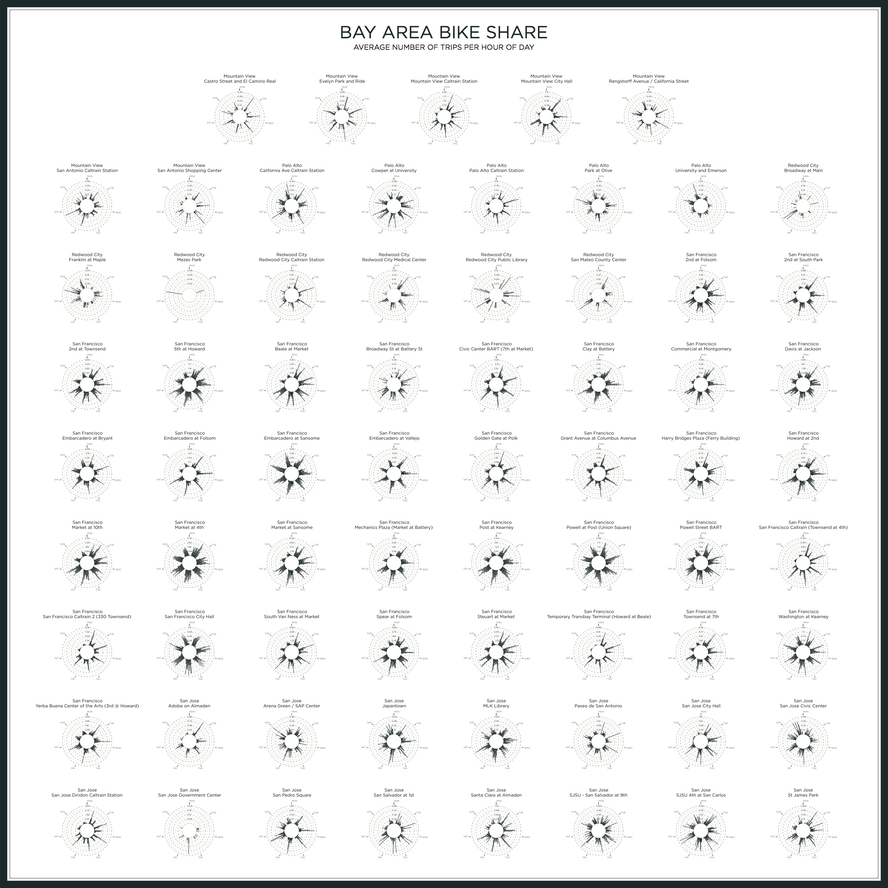
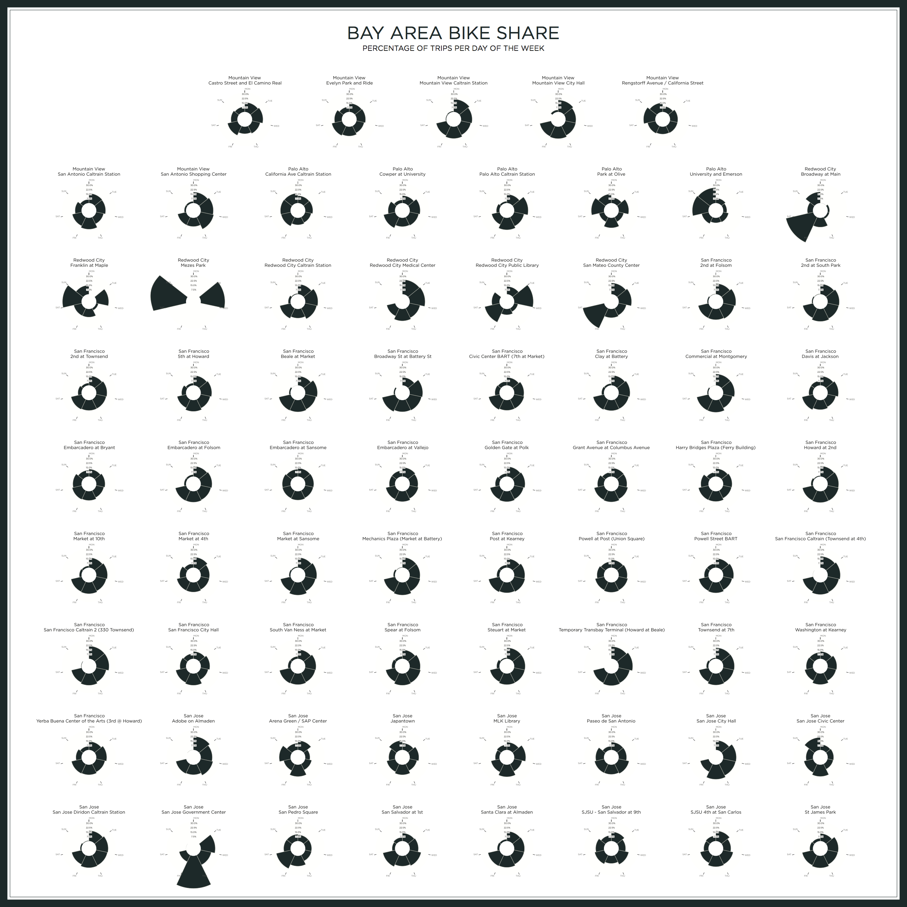
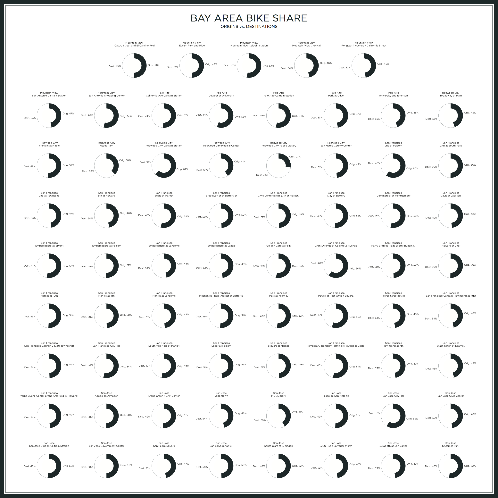
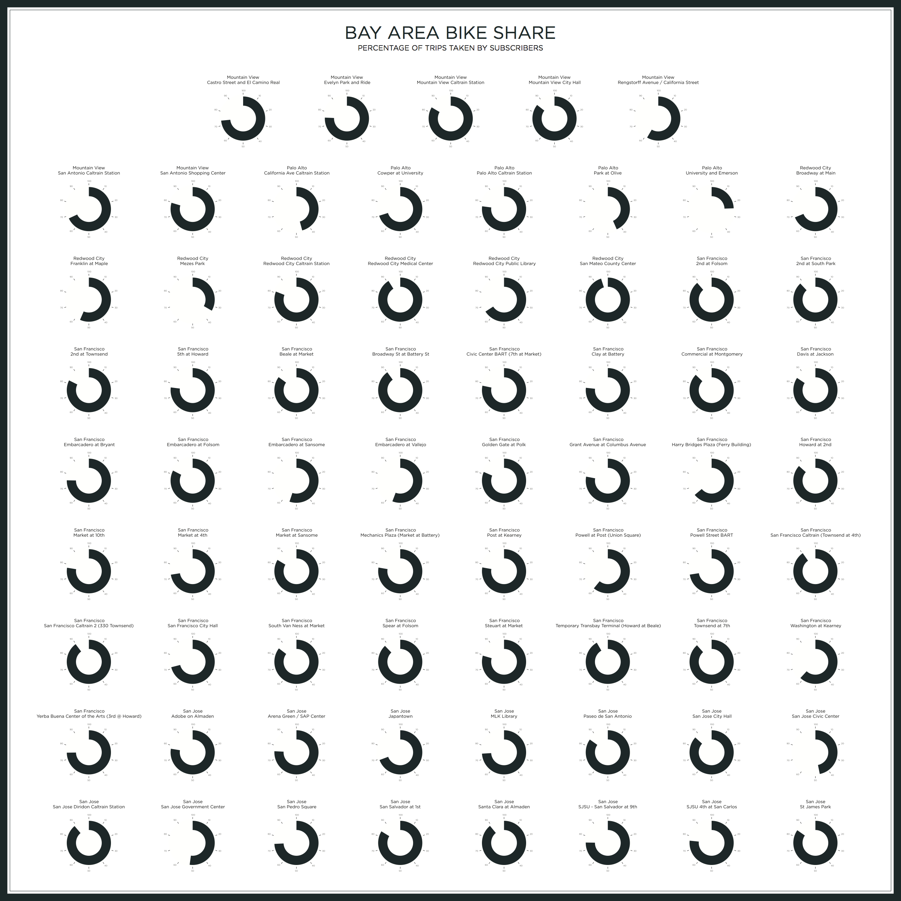
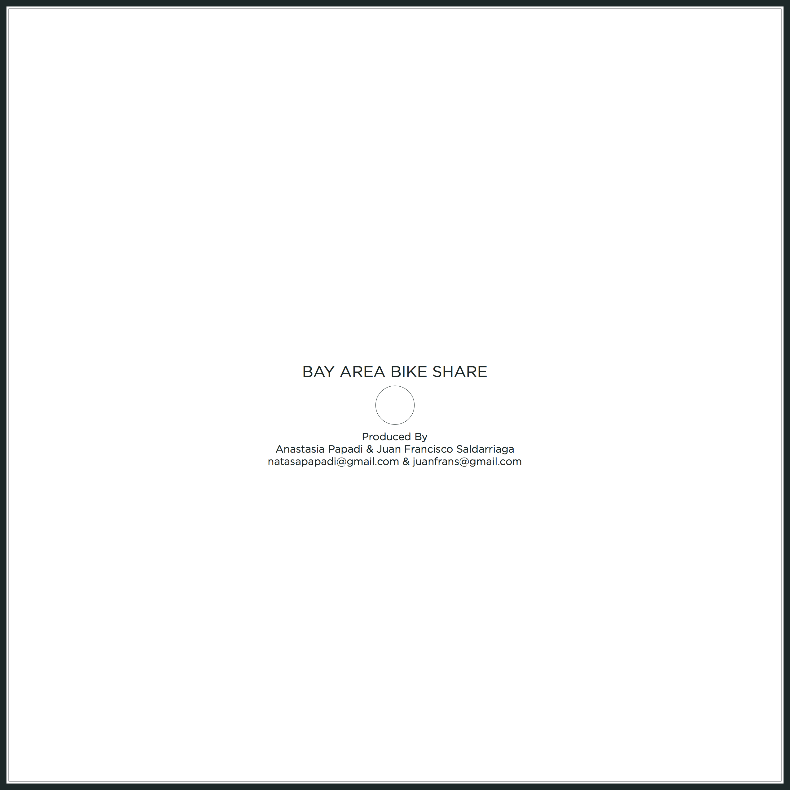
28 Dec 2013
Hyde is a brazen two-column Jekyll theme that pairs a prominent sidebar with uncomplicated content. It's based on Poole, the Jekyll butler.
Built on Poole
Poole is the Jekyll Butler, serving as an upstanding and effective foundation for Jekyll themes by @mdo. Poole, and every theme built on it (like Hyde here) includes the following:
- Complete Jekyll setup included (layouts, config, 404, RSS feed, posts, and example page)
- Mobile friendly design and development
- Easily scalable text and component sizing with
rem units in the CSS
- Support for a wide gamut of HTML elements
- Related posts (time-based, because Jekyll) below each post
- Syntax highlighting, courtesy Pygments (the Python-based code snippet highlighter)
Hyde features
In addition to the features of Poole, Hyde adds the following:
- Sidebar includes support for textual modules and a dynamically generated navigation with active link support
- Two orientations for content and sidebar, default (left sidebar) and reverse (right sidebar), available via
<body> classes
- Eight optional color schemes, available via
<body> classes
Head to the readme to learn more.
Browser support
Hyde is by preference a forward-thinking project. In addition to the latest versions of Chrome, Safari (mobile and desktop), and Firefox, it is only compatible with Internet Explorer 9 and above.
Download
Hyde is developed on and hosted with GitHub. Head to the GitHub repository for downloads, bug reports, and features requests.
Thanks!